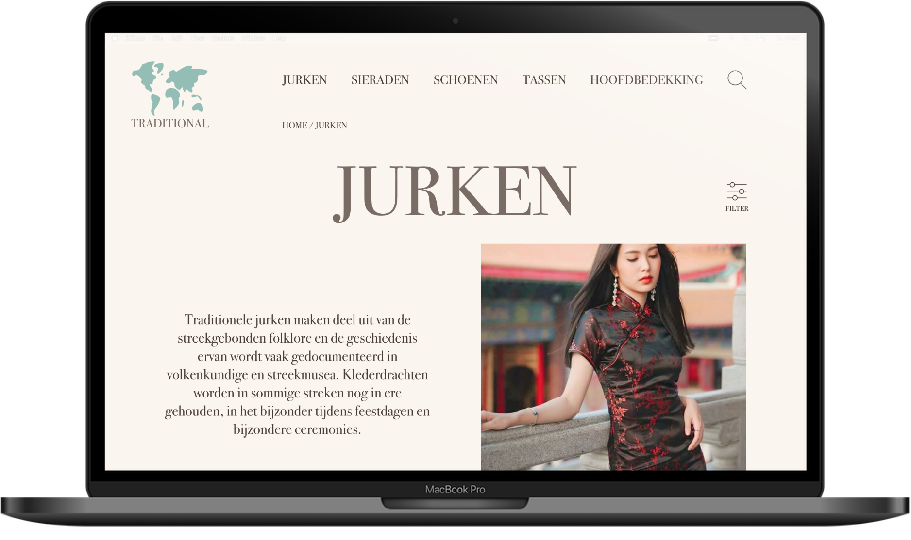
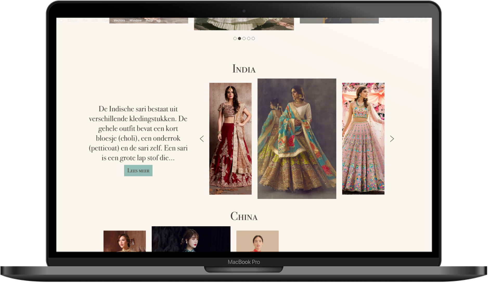
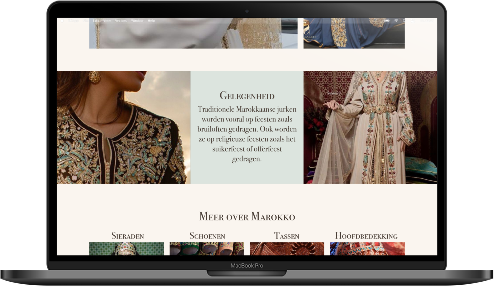

Traditional the website
Grid en Kleur
Het centrale thema van deze opdracht is “producten met een hernieuwde waarde voor de gebruiker“. Ik heb gekozen voor traditionele jurken, sieraden, schoenen, tassen en hoofdbedekking. Hiervan heb ik het onderwerp traditionele jurken uitgewerkt. Een aantal van deze schermen zijn hieronder te zien. Klik op de link hieronder voor de volledige prototype.
Klik hier voor de interface.
  